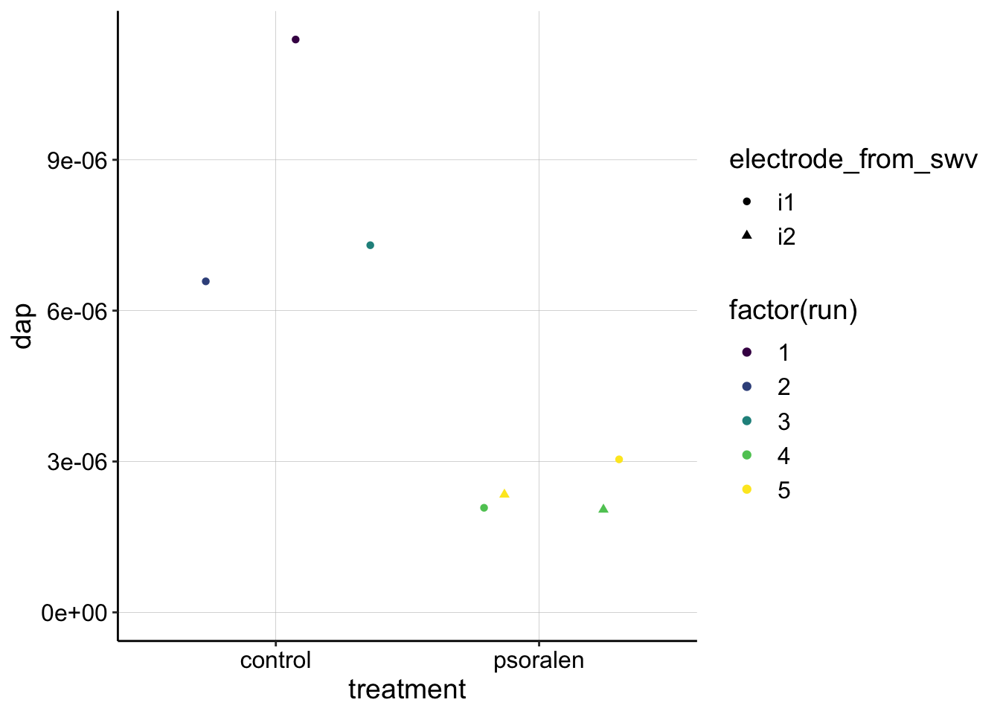
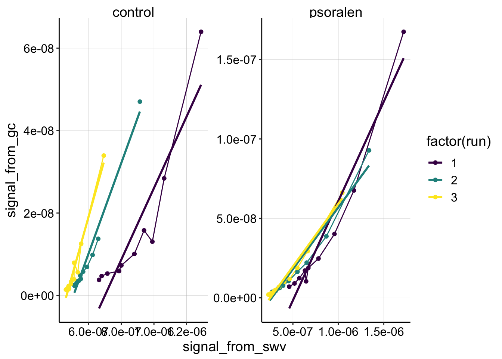

Psoralen treatment - Non equilibrium #2
\(D_{ap}\) Analysis
01_17_19
library(tidyverse)
library(cowplot)
library(broom)
library(modelr)
library(viridis)
library(lubridate)
library(hms)
knitr::opts_chunk$set(tidy.opts=list(width.cutoff=60),tidy=TRUE, echo = TRUE, message=FALSE, warning=FALSE, fig.align="center")
source("../../tools/echem_processing_tools.R")
source("../../tools/plotting_tools.R")
theme_set(theme_1())df_control <- read_csv("../Processing/01_17_19_swv_gc_control_dap_processed.csv")
df_psoralen <- read_csv("../Processing/01_17_19_swv_gc_psoralen_dap_processed.csv")dap_calc <- function(m, t_p=1/300){
psi <- 0.91
A <- 0.025 #cm^2
S <- 18.4 #cm
d_ap <- (m*A*psi)^2 / (S^2 * pi * t_p)
d_ap
}Control
ggplot(df_control %>% filter(reactor=='transfer' & rep>0 & electrode_from_swv=='i1'),
aes(x = signal_from_swv, y = signal_from_gc, color=factor(run)))+
geom_line()+
geom_point()+
geom_smooth(method='lm',se=F)+
scale_color_viridis(discrete = T)
swv_gc_control_lms <- df_control %>%
filter(reactor=='transfer' & rep>0 & electrode_from_swv=='i1') %>%
group_by(run,treatment,electrode_from_swv) %>%
do(tidy(lm(signal_from_gc~signal_from_swv,.)))
swv_gc_control_dap <- swv_gc_control_lms %>%
filter(term=='signal_from_swv') %>%
mutate(dap=dap_calc(m = estimate))Run 1 is extremely linear, it becomes more curved after.
Psoralen
ggplot(df_psoralen %>% filter(reactor=='transfer' & rep>0),
aes(x = signal_from_swv, y = signal_from_gc, color=factor(run)))+
geom_line()+
geom_point()+
geom_smooth(method='lm',se=F)+
facet_wrap(~electrode_from_swv,scales='free')+
scale_color_viridis(discrete = T)
swv_gc_psoralen_lms <- df_psoralen %>%
filter(reactor=='transfer' & rep>0) %>%
group_by(run,treatment,electrode_from_swv) %>%
do(tidy(lm(signal_from_gc~signal_from_swv,.)))
swv_gc_psoralen_dap <- swv_gc_psoralen_lms %>%
filter(term=='signal_from_swv') %>%
mutate(dap=dap_calc(m = estimate, t_p=(1/15)))psoralen looks pretty linear. If anything, because of the slow scan rate, these runs should have a more pronounced curvature, since the SWVs associated with each GC would be lower than expected (shifting the points leftward). Therefore, the estimated Dap for the psoralen condition could also be an upper estimate.
dap_estimates <- rbind(swv_gc_control_dap,swv_gc_psoralen_dap)
ggplot(dap_estimates, aes(x=treatment,y=dap,color=factor(run), shape=electrode_from_swv))+
geom_jitter()+
ylim(0,NA)+
scale_color_viridis(discrete = T)
exp1_df <- read_csv("../../01_08_19_psoralen_nonequil/Processing/01_08_19_processed_swv_gc_signals.csv")
ggplot(exp1_df %>% filter(reactor=='transfer' & rep>0 & electrode_from_swv=='i1'),
aes(x = signal_from_swv, y = signal_from_gc, color=factor(run)))+
geom_line()+geom_point()+
geom_smooth(method='lm',se=F)+
facet_wrap(~treatment,scales='free')+
scale_color_viridis(discrete = T)
Compare the first dataset (above) with the second dataset discussed in this document. For whatever reason, both conditions look much more curved. Remember that the control had some weird behavior where the SWV peak didn’t continue to decrease, so that may give the appearance of curvature. Perhaps the true slope are the first few large magnitude points. I would say that the psoralen sample didn’t look weird though, and is pretty comparable to the experiment 2 dataset. However, it is obviously curved and poorly fit with the linear model…so it’s hard to accurately estimate what the Dap may have been…not sure how to proceed right now.